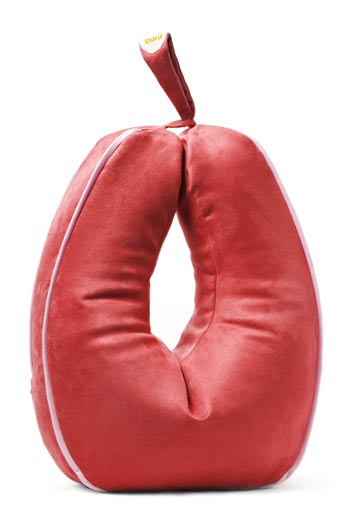

bara snákurinn
Hálskragi
Mjúkur fjölnota stuðningskragi sem hjálpar þér að hvílast og slaka á.
Bara er fyrirtæki sem sérhæfir sig í hönnun og framleiðslu á heilsuvörum. Frá upphafi höfum við haft það að markmiði að bjóða hágæða stuðningsvörur sem bæta heilsu og líðan fólks.
Góð samvinna við fagfólk og notendur í þróunarferlinu og áhersla á fallega hönnun hefur skilað sér í vandaðri vörulínu í formi stuðningspúða, hálskraga, handleggjastuðnings auk annarra sérlausna.
Bara vörunum er ætlað að styðja við rétta líkamsstöðu, minnka álag á vöðva og liði og auðvelda fólki að stunda fjölbreytta iðju.
Smelltu hér til að lesa meira um Bara
Eplið og Peran fæst í hannyrðaversluninni Amma mús – hanndavinnuhús að
Grensásvegi 46, 108 Reykjavík.
Amma Mús á Facebook.

Eplið og Peran fæst í Handprjón – garnverslun að Reykjavíkurvegi 64, 220
Hafnarfjörður.
Handprjón á Facebook.
Eplið, Peran og Snákurinn fást í verslun SÍBS í Síðumúla 6, Reykjavík.
Hægt er að sækja um hjálpartækin frá Bara til Hjálpartækjamiðstöðvar
Sjúkratrygginga Íslands.


 Amber
Gult
Amber
Gult
Rouge Rautt
Lime Grænt
 Vanillu
Beige
Vanillu
Beige
 Grafít
Grátt
Grafít
Grátt
Eplið frá Bara er fjölnota stuðningspúði sem styður við líkamann á marga vegu og nýtist bæði til iðju og til hvíldar.
Eplinu er sérstaklega ætlað að vera stuðningur undir framhandleggina næst líkamanum þegar setið er og unnið með höndunum. Þannig léttir eplið álag á herðar og bak.
Púðinn er vinsæll við ýmsa handavinnu og rannsóknir sýna að hægt er að minnka vöðvaspennu með því að nota hann sem stuðning undir framhandleggina við tölvuvinnu.
Í innri hring púðans er teygja sem hægt er að draga saman svo þétt að hann klemmist utan um bolinn og það er jafnvel hægt að standa með hann þannig.
Hægt er að nota Eplið á fjölbreyttan hátt til að ná fram
tilætluðum stuðningi og virkni.
Við höfum í gegnum árin reglulega uppgötvað nýja notkunarmöguleika fyrir púðan,
en fyrst og fremst er hann hugsaður í fangið sem stuðningur undir handleggina
til að létta undir axlirnar. Þannig hentar Eplið við leik og
iðju, til dæmis:
eða bara við einfalda slökun, faðmaðu Bara-púðann og láttu þér líða vel í sófanum eða hægindastólnum.
Aðrir möguleikar eru að hafa púðann fyrir aftan bak sem stuðning við mjóbak og einnig er mögulegt að klemma hann utan um mittið þannig að hægt sé að hvíla herðar þegar staðið er. Það er gert með teygju sem er að finna á innri hlið púðans.
Allt snýst þetta um að láta sér líða sem best og við setjum engin takmörk fyrir því hvernig hver og einn velur að nota Eplið sér til gagns.
Eplið er gert úr vönduðu áklæðisefni með teflonvörn. Það
má þvo ytrabyrði púðans á 30°C á mildu þvottaprogrammi og þvottaefnið
þarf að vera án bleikiefna. Einnig er hægt að setja púðaverið í
hreinsun.
Ekki má setja púðaverið í þurrkara.


 Vanillu
Beige
Vanillu
Beige
Lime Grænt
Amber Gult
Rouge Rautt
 Grafít
Grátt
Grafít
Grátt
Stór og notalegur stuðningspúði undir framhandleggi og hendur sem bætir setstöðu og gerir fólki kleyft að slaka á í herðum, handleggjum og baki. Peran hefur mjúkt borð fyrir handleggina sem nýtist við ýmiskonar iðju eins og bóklestur og tölvuvinnu. Púðinn kemur foreldrum ungbarna einnig að góðum notum.
Sjúkra- og iðjuþjálfar hafa frá upphafi mælt með Bara-púðunum. Margir upplifa öryggi, vellíðan og betra setjafnvægi þegar framhandleggirnir hvíla á púðunum og rannsóknir sýna að notkun þeirra dregur úr vöðvaspennu og auðveldar fólki ýmsa iðju.
Berðu góðan ávöxt! – Þrátt fyrir stærð Perunnar er auðvelt að taka hann með sér hvert sem farið er.
Peran er einskonar stærri útgáfa af Eplinu og nýtist á mjög svipaðan hátt en stærðin býður líka upp á aðra möguleika. Þannig er hægt að hvíla þyngri og stærri hluti á púðanum, t.d. stóra bók og hefur púðinn því stundum verið kallaður bókapúðinn.
Við tölum gjarnan um púðana okkar sem mublur, á sama hátt og við eigum skemil
undir fæturnar í hægindastólnum þá er stuðningspúðinn skemill undir
hendurnar.
Það er okkur mikilvægt að þegar púðinn er ekki í notkun sé hann yndi fyrir augað
þegar honum er stillt upp hvort sem það er standandi á gólfinu eða þar sem honum
er komið vel fyrir upp í sófa, rúmi eða upp á stól.
Að njóta og láta sér líða vel er samt alltaf mikilvægast og er það von okkar að Peran geti komið vel að liði til þess.
Peran er gerð úr vönduðu áklæðisefni með teflonvörn. Það
má þvo ytrabyrði púðans á 30°C á mildu þvottaprogrammi og þvottaefnið
þarf að vera án bleikiefna. Einnig er hægt að setja púðaverið í
hreinsun.
Ekki má setja púðaverið í þurrkara.


Cox Grátt
 Burgundy
Rautt
Burgundy
Rautt
 Moss Grænt
Moss Grænt
 Navy
Blátt
Navy
Blátt
Snákurinn er mjúkur hálskragi sem einfalt er að hringa utan um hálsin eins og trefil til að ná fram tilætluðum stuðningi við höfuð og háls.
Hann er frábær á ferðalagi fyrir þá sem vilja hvílast þegar setið er í flugvél, bíl eða lest.
Hugarfarið á bak við hönnunina var að skapa heilsuvöru sem vekur jákvæða athygli fyrir notendur og reynist frábær lausn fyrir fólk sem á við krónísk vandamál í hálsi að stríða.
Snákurinn býður líka upp á allskonar möguleika til notkunar sem skart, þá er bara að þora að láta hugmyndaflugið ráða ferðinni.
Snákurinn kemur pakkaður í fallegri öskju.
Snákurinn frá Bara býður upp á áður óþekkta notkunarmöguleika þegar kemur að heilsuvöru og hjálpartæki.
Hin óhefðbundna hönnun á hálskraganum skapar möguleikan á að binda eða vefja hann á sig og nota hann sem skart/aukahlut eða einhversskonar trefil. Þannig getur Snákurinn verið eitthvað nýtt og spennandi í hvert skipti sem þú setur hann á þig.
Snákurinn er frábær ferðafélagi! Hvort sem það eru lengri eða styttri ferðalög hjálpar hann þér að slaka á og hvílast þegar þú situr í flugvél, bíl eða lest.
Snákurinn er góð áminning þess að halda hálsinum uppréttum og koma í veg fyrir að þú missir höfuðið fram og haldir slæmri álagsstöðu til lengri tíma á háls og herðar.
Hálskraginn hjálpar þeim sem eiga við minniháttar eða króníska áverka í hálsi að
stríða að halda höfðinu stöðugu. Einfalt er að stilla Snákinn
að hverjum og einum og stýra stífleika og stuðning sem hann á að veita hverju
sinni.
Margir notendur upplifa öryggis- og vellíðunartilfinningu með stuðning
Snáksins frá Bara.
Snákinn má aðeins handþvo á hámark 40°C
eða setja í þvottavélapoka á mildu prógrammi í þvottavél. Nauðsynlegt er
að meðhöndla Snákinn af gætni og teygja ekki á
honum.
Ekki má setja Snákinn í þurrkara.


Byrjaðu með því að leggja styttri og breiðari endan á Snáknum á aðra öxlina.

Vefðu Snáknum um hálsinn og upp í átt að hökunni þannig að hann sitji þægilega.
Taktu í granna endan á Snáknum og lokaðu hringnum með því að stínga honum inn á milli Snáksins við hökuna.

Slakaðu á og njóttu stuðningsins sem Snákurinn frá Bara veitir þér.
{kind=link}
{kind=link}
{kind=link}
{kind=link}
{kind=link}
{kind=link}
{kind=link}
{kind=link}
{kind=link}
{kind=link}
{kind=link}
{kind=link}
{kind=link}
{kind=link}
{kind=link}
{kind=link}
{kind=link}
{kind=link}
{kind=link}
{kind=link}
{kind=link}
{kind=link}
{kind=link}
{kind=link}
{kind=link}